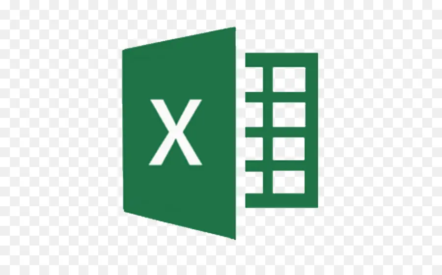

To showcase my portfolio of data analysis and visualization projects in MySQL, Tableau, Power BI, MS Excel, and Python.
In MySQL, I utilized data cleaning techniques to identify and correct inaccuracies, inconsistencies, and missing data, ensuring high-quality datasets. In Tableau and Power BI, I built dynamic dashboards, while in Python and MS Excel, I automated data analysis tasks.
These projects highlight my ability to handle complex data, enhance decision-making through visual insights, and optimize workflows with automation.


MySQL queries are vital for retrieving, updating, and managing data efficiently, enabling operations like filtering, sorting, and joining tables. They make data handling flexible and powerful for various tasks within a database environment.

My dynamic Tableau dashboards offer real-time insights, allowing users to interact with filters, parameters, and visual elements. This flexibility helps in visualizing trends and making informed, data-driven decisions based on customized views.
My Power BI dashboards provide interactive, real-time insights by enabling users to engage with slicers, filters, and visual components. This adaptability allows for the exploration of data trends and supports informed decision-making through tailored views.

MS Excel is a powerful tool in data analysis, enabling users to organize, manipulate, and visualize data through functions, formulas, and charts. Its ease of use makes it ideal for performing complex calculations and generating insightful reports.

Python is widely used in data analytics for its powerful libraries like Pandas and NumPy, enabling efficient data manipulation and analysis. It simplifies tasks such as data cleaning, visualization, and automation, making it essential for data-driven insights.